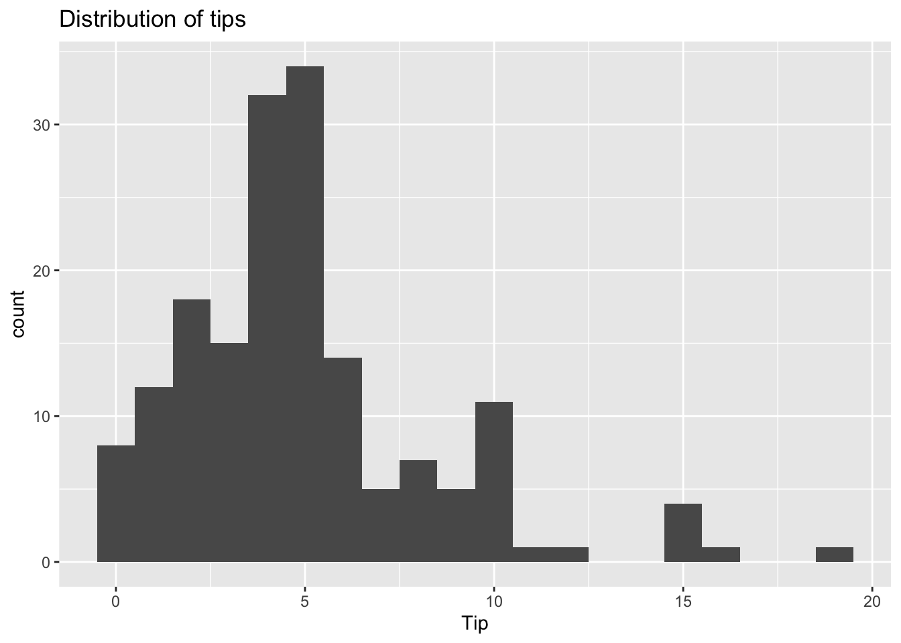
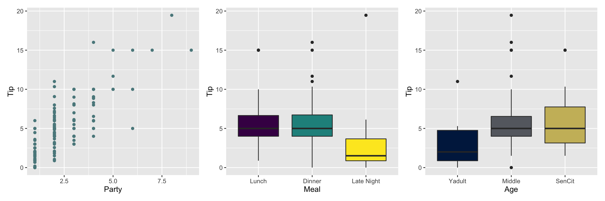

library(tidyverse)
library(tidymodels)
library(viridis)
library(knitr)
library(patchwork)AE 09: Model comparison
Restaurant tips
Important
Go to the course GitHub organization and locate your ae-09- to get started.
The AE is due on GitHub by Saturday, October 22 at 11:59pm.
Packages
Load data
tips <- read_csv("data/tip-data.csv") |>
filter(!is.na(Party))# relevel factors
tips <- tips |>
mutate(
Meal = fct_relevel(Meal, "Lunch", "Dinner", "Late Night"),
Age = fct_relevel(Age, "Yadult", "Middle", "SenCit")
)Exploratory data analysis
Response variable
ggplot(tips, aes(x = Tip)) +
geom_histogram(binwidth = 1) +
labs(title = "Distribution of tips")
Predictor variables
p1 <- ggplot(tips, aes(x = Party)) +
geom_histogram(binwidth = 1) +
labs(title = "Number of people in party")
p2 <- ggplot(tips, aes(x = Meal, fill = Meal)) +
geom_bar() +
labs(title = "Meal type") +
scale_fill_viridis_d()
p3 <- ggplot(tips, aes(x = Age, fill = Age)) +
geom_bar() +
labs(title = "Age of payer") +
scale_fill_viridis_d(option = "E", end = 0.8)
p1 + (p2 / p3)
Response vs. predictors
p4 <- ggplot(tips, aes(x = Party, y = Tip)) +
geom_point(color = "#5B888C")
p5 <- ggplot(tips, aes(x = Meal, y = Tip, fill = Meal)) +
geom_boxplot(show.legend = FALSE) +
scale_fill_viridis_d()
p6 <- ggplot(tips, aes(x = Age, y = Tip, fill = Age)) +
geom_boxplot(show.legend = FALSE) +
scale_fill_viridis_d(option = "E", end = 0.8)
p4 + p5 + p6
Models
Model 1: Tips vs. Age & Party
tip_fit <- linear_reg() |>
set_engine("lm") |>
fit(Tip ~ Party + Age, data = tips)
tidy(tip_fit) |>
kable(digits = 3)| term | estimate | std.error | statistic | p.value |
|---|---|---|---|---|
| (Intercept) | -0.170 | 0.366 | -0.465 | 0.643 |
| Party | 1.837 | 0.124 | 14.758 | 0.000 |
| AgeMiddle | 1.009 | 0.408 | 2.475 | 0.014 |
| AgeSenCit | 1.388 | 0.485 | 2.862 | 0.005 |
Model 2: Tips vs. Age, Party, Meal & Day
tip_fit_2 <- linear_reg() |>
set_engine("lm") |>
fit(Tip ~ Party + Age + Meal + Day,
data = tips)
tidy(tip_fit_2) |>
kable(digits = 3)| term | estimate | std.error | statistic | p.value |
|---|---|---|---|---|
| (Intercept) | -0.354 | 0.968 | -0.365 | 0.715 |
| Party | 1.792 | 0.126 | 14.179 | 0.000 |
| AgeMiddle | 0.506 | 0.427 | 1.185 | 0.238 |
| AgeSenCit | 1.017 | 0.494 | 2.058 | 0.041 |
| MealDinner | 0.636 | 0.457 | 1.390 | 0.167 |
| MealLate Night | -0.729 | 0.754 | -0.967 | 0.335 |
| DaySaturday | 0.812 | 0.783 | 1.038 | 0.301 |
| DaySunday | 0.097 | 0.877 | 0.111 | 0.912 |
| DayThursday | 0.069 | 0.897 | 0.077 | 0.939 |
| DayTuesday | 0.414 | 0.670 | 0.618 | 0.537 |
| DayWednesday | 0.936 | 1.098 | 0.853 | 0.395 |
\(R^2\) and Adjusted \(R^2\)
Fill in the code below to calculate \(R^2\) and Adjusted \(R^2\) for Model 1. Put eval: true once the code is updated.
glance(______) |>
select(r.squared, adj.r.squared)Calculate \(R^2\) and Adjusted \(R^2\) for Model 2.
# r-sq and adj. r-sq for model 2AIC & BIC
Use the glance() function to calculate AIC and BIC for Models 1 and 2.
## AIC and BIC for Model 1## AIC and BIC for Model 2